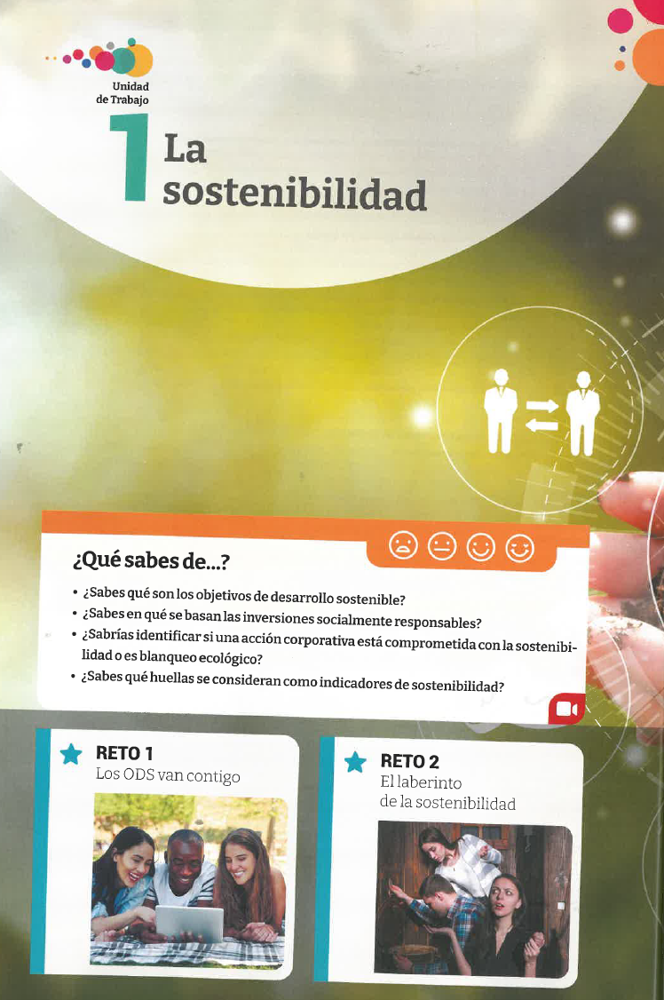

Unidad 1: La Sostenibilidad y el Desarrollo Sostenible
Objetivos
- Comprender el concepto de sostenibilidad y su importancia.
- Conocer los marcos internacionales de referencia para el desarrollo sostenible.
- Identificar y analizar los Objetivos de Desarrollo Sostenible (ODS).
- Reflexionar sobre el impacto humano en el medio ambiente y las medidas para mitigar sus efectos.
Comenzamos

Glosario
Glosario de términos
Desarrollo Sostenible: Modelo de desarrollo que satisface las necesidades del presente sin comprometer la capacidad de las futuras generaciones para satisfacer sus propias necesidades.
Sostenibilidad: Capacidad de mantener un equilibrio entre las actividades humanas y las condiciones del entorno natural a lo largo del tiempo.
ODS: Objetivos de Desarrollo Sostenible, una serie de metas globales establecidas por la ONU en la Agenda 2030 para erradicar la pobreza, proteger el planeta y asegurar la prosperidad.
Acuerdo de París: Tratado internacional de 2015 en el que se establecieron metas globales para combatir el cambio climático.
Agenda 2030: Plan de acción de la ONU que establece 17 Objetivos de Desarrollo Sostenible para el bienestar global.
1.1. La sostenibilidad y el desarrollo sostenible
La actividad humana extrae recursos de su entorno para satisfacer sus necesidades. Esto genera un impacto que puede poner en peligro los recursos necesarios para las generaciones futuras. Por lo tanto, es esencial asegurar la sostenibilidad, que busca un equilibrio duradero entre el desarrollo humano y la preservación del entorno.
Definición
La sostenibilidad es el mantenimiento a lo largo del tiempo del equilibrio entre las actividades y sociedades humanas y las condiciones del entorno en el que se desarrollan.
Actividad 1
- Reflexiona sobre la pregunta: ¿Qué nos preocupa de nuestro futuro?
- Escribe una reflexión sobre los principales retos en sostenibilidad.
1.1.1. El desarrollo sostenible
El desarrollo sostenible es aquel que busca satisfacer las necesidades del presente sin comprometer los recursos de las futuras generaciones. Este modelo se basa en tres pilares fundamentales:
- Prosperidad económica: Garantizar una actividad económica que satisfaga los deseos y necesidades de las personas.
- Progreso social: Mejorar el bienestar de las personas sin comprometer el entorno.
- Sostenibilidad medioambiental: Proteger el medioambiente como base del desarrollo sostenible.
Actividad 2
- Investiga en qué consiste el desarrollo sostenible y cómo se aplica a diferentes sectores.
- Elabora un informe breve sobre la importancia del desarrollo sostenible en la actualidad.
1.1.2. Marcos internacionales
El desarrollo sostenible es un objetivo mundial que requiere la cooperación de gobiernos, sectores económicos y sociedad en general. Algunos de los marcos internacionales más importantes son:
- Acuerdo de París: Busca limitar el aumento de la temperatura global por debajo de los 2ºC.
- Marco de Sendai: Se centra en la reducción del riesgo de desastres naturales.
- Agenda 2030: Plan de acción con 17 ODS para lograr un futuro más sostenible.
Actividad 3
- Reflexiona sobre el impacto del Acuerdo de París en las políticas locales. ¿Cómo ha afectado a tu país?
Video sobre el Acuerdo de París
1.1.3. Los Objetivos de Desarrollo Sostenible (ODS)
Los ODS fueron establecidos en 2015 en la Agenda 2030 de la ONU. Son 17 objetivos globales que buscan enfrentar desafíos como la pobreza, el hambre, la desigualdad, y el cambio climático.
Los 17 ODS:
- Fin de la pobreza
- Hambre cero
- Salud y bienestar
- Educación de calidad
- Igualdad de género
- Agua limpia y saneamiento
- Energía asequible y no contaminante
- Trabajo decente y crecimiento económico
- Industria, innovación e infraestructura
- Reducción de las desigualdades
- Ciudades y comunidades sostenibles
- Producción y consumo responsables
- Acción por el clima
- Vida submarina
- Vida de ecosistemas terrestres
- Paz, justicia e instituciones sólidas
- Alianzas para lograr los objetivos
Actividad 4
- Elige uno de los ODS y explica cómo contribuye a la sostenibilidad global.
- Elabora un informe sobre su impacto y metas principales.
Actividad propuesta
Completa la siguiente tabla con los ODS que más impactan en tu comunidad:
| ODS | Impacto local |
|---|---|
| ODS 1 | |
| ODS 3 | |
| ODS 7 | |
| ODS 13 |